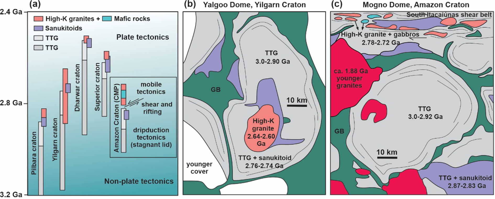

Restoring original composition of hydrothermally altered Archean metavolcanic rocks of the Carajás Mineral Province (Brazil): Geodynamic implications for the transitions from lid to mobile tectonics

Resumo em Português
Uma das questões mais debatidas sobre a Província Mineral de Carajás no Brasil é o contexto tectônico que prevaleceu durante o principal evento vulcânico Neoarqueano (~2,7 Ga), com visões variando de relacionado à subducção a relacionado ao rifte. Durante esse evento, espessos fluxos de lava de composição predominantemente basáltica e basáltico-andesítica foram extrudidos na superfície terrestre, resfriaram e sofreram alteração significativa por fluidos hidrotermais ascendentes por falhas crustais profundas.Neste trabalho, utilizamos um método baseado em redes neurais artificiais para realizar um cálculo completo de balanço de massa em um extenso banco de dados compilado de rochas metavulcânicas de Carajás. Os precursores preditos reproduzem um aumento linear e limitado de FeO*/MgO com SiO₂, típico de ambientes modernos de arco calc-alcalino. As rochas menos alteradas identificadas mostram que podem petroneticamente envolver sedimentos portadores de água subductados. No entanto, contrariamente ao esperado para tal ambiente de arco vulcânico, fracionamentos de anfibólio e magnetita não foram observados nos precursores. Os diagramas de discriminação usando elementos traço incompatíveis foram incapazes de descartar a hipótese de subducção, de modo que outras evidências geológicas e geoquímicas do registro granitóide de Carajás foram consideradas.Em combinação com a evolução granitóide Arqueana da PMC, conclui-se que a contaminação crustal associada ao rifteamento continental parece ser o processo mais provável para induzir a afinidade calc-alcalina das rochas metavulcânicas Neoarqueanas de Carajás. Essa afinidade calc-alcalina é melhor reproduzida por modelagem petrogenética envolvendo assimilação de rocha encaixante e fusão do embasamento de Carajás (TTG e outros granitoides ricos em K) por magmas parentais derivados de fonte mantélica depletada, anterior à sua cristalização fracionada. Esse evento vulcânico foi coeval com a intrusão de granitoides sintectônicos do tipo-A na transição de um regime de tectônica de tampa estagnante para tectônica de placas móveis, associado ao rifte transpressional translitosférico localizado.